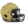
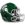
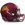
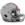
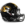
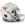
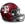
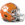
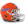
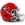
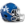
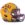
 Army
Army Cambridge
Cambridge Heidelberg
Heidelberg Kings College London
Kings College London Maryland
Maryland Otterbein
Otterbein Penn State
Penn State Rutgers
Rutgers Syracuse
Syracuse Illinois
Illinois Iowa
Iowa Michigan
Michigan Nebraska
Nebraska Northwestern
Northwestern Notre Dame
Notre Dame Wisconsin
Wisconsin California
California Oklahoma
Oklahoma Oregon
Oregon Stanford
Stanford UCLA
UCLA USC
USC Washington
Washington Alabama
Alabama Auburn
Auburn Florida State
Florida State Miami (FL)
Miami (FL) West Virginia
West Virginia